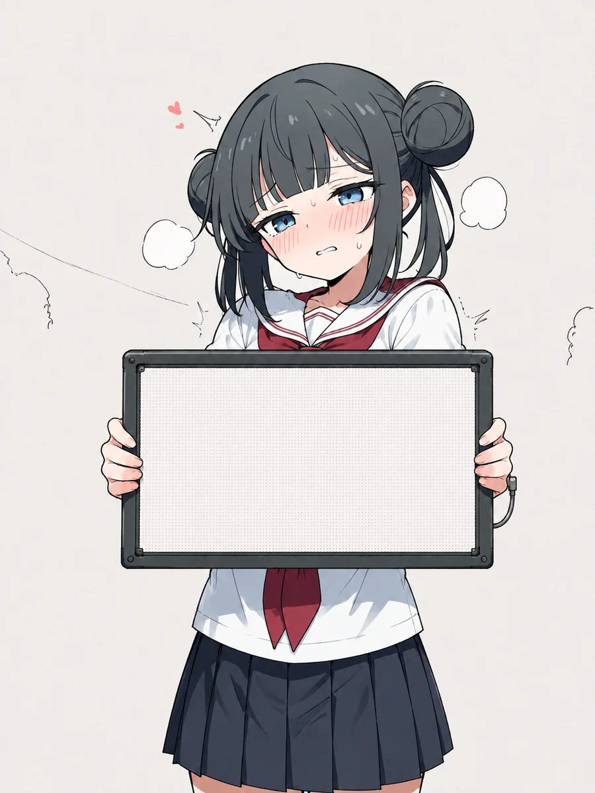

Free Game / No.30
【衝撃】ブロック崩しをクリアすると
見られる動画がヤバすぎると話題に
※ この動画を見るには、下の簡単なゲームをクリアしてください。
2008/06/14 投稿
Step 1 / 2 — Breakout
ブロック崩し
000
003
マウス（スマホは指）でバーを動かす。クリック／タップ／スペースで発射。 手前の一列は当てるとボールが増えます。

30 TRAPS
初見
00:00.000
RTA MODE UNLOCKED